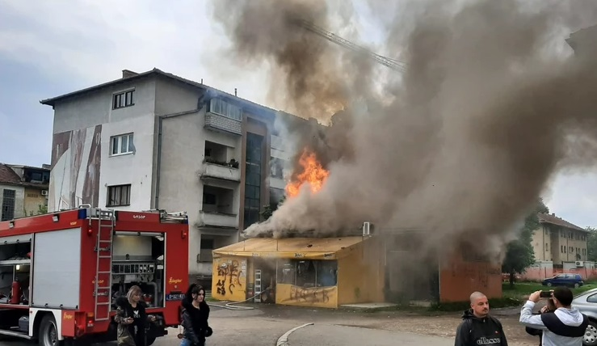
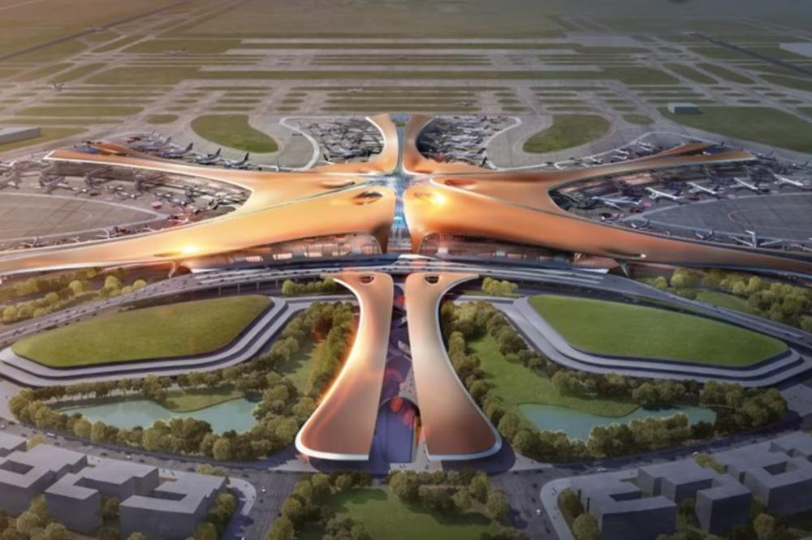

↑ Vrati se na početak


Kultura NOVO
Vodimo vas u bioskop

Teroristički napad na ostrvu Uteja u blizini prestonice Oslo 2011. godine ostao je u sećanjima širom sveta, a po prvi put u Norveškoj snimljen je igrani film o ovom nemilom događaju.
Vodimo vas u bioskop
Teroristički napad na ostrvu Uteja u blizini prestonice Oslo 2011. godine ostao je u sećanjima širom sveta, a po prvi put u Norveškoj snimljen
je igrani film o ovom nemilom događaju. Ostvarenje vodećeg savremenog reditelja Erika Popea „Uteja - 22. jul“ naći će se na bioskopskom
platnu od 9 maja.
Priča prati osamnaestogodišnju devojku Kaju i njene prijatelje koji su meta terorističkog napada i koji mahnito i u strahu za sopstveni život, pokušavaju da pobegnu na sigurno i spasu se.
Film je zasnovan na istinitim iskazima preživelih. Ručna kamera i snimljanje u pokretu daju osećaj prave reportaže, ipak nije reč o dokumentarcu već o igranom filmu tokom kojeg je publika jednako zbunjena onim šta se dešava kao i glavni lik.
Film "Uteja - 22. jul" je zasnovan na temeljnim istraživanjima i intervjuima koje je reditelj i scenarista Erik Pope uradio sa 20 mladih ljudi koji su preživeli taj dan na ostrvu s namerom da prikaže strašan događaj iz perspektive žrtava. Više od dve godine reditelj je pokušavao da pronađe način kako da ispriča ovaj tragičan događaj.
„Želeo sam da ispričam priču sa stanovišta mladih koji su preživeli. Neki ljudi kažu da je još uvek rano za tu vrstu prikaza, a drugi se pitaju: A, kada je pravo vreme?“ rekao je reditelj. Dva teroristička napada u Norveškoj dogodila su se 2011. godine, na omladinskom letnjem kampu na ostrvu Uteja nedaleko od prestonice Oslo, kao i u samoj prestonici i taj dan na smrt je stradalo 77 ljudi.
Mi vas vodimo na projekciju filma večeras od 19.20 (Kombank dvorana). Pošaljite nam danas mejl na poklanjamo@ringier.rs do 16 sati.
Priča prati osamnaestogodišnju devojku Kaju i njene prijatelje koji su meta terorističkog napada i koji mahnito i u strahu za sopstveni život, pokušavaju da pobegnu na sigurno i spasu se.
Film je zasnovan na istinitim iskazima preživelih. Ručna kamera i snimljanje u pokretu daju osećaj prave reportaže, ipak nije reč o dokumentarcu već o igranom filmu tokom kojeg je publika jednako zbunjena onim šta se dešava kao i glavni lik.
Film "Uteja - 22. jul" je zasnovan na temeljnim istraživanjima i intervjuima koje je reditelj i scenarista Erik Pope uradio sa 20 mladih ljudi koji su preživeli taj dan na ostrvu s namerom da prikaže strašan događaj iz perspektive žrtava. Više od dve godine reditelj je pokušavao da pronađe način kako da ispriča ovaj tragičan događaj.
„Želeo sam da ispričam priču sa stanovišta mladih koji su preživeli. Neki ljudi kažu da je još uvek rano za tu vrstu prikaza, a drugi se pitaju: A, kada je pravo vreme?“ rekao je reditelj. Dva teroristička napada u Norveškoj dogodila su se 2011. godine, na omladinskom letnjem kampu na ostrvu Uteja nedaleko od prestonice Oslo, kao i u samoj prestonici i taj dan na smrt je stradalo 77 ljudi.
Mi vas vodimo na projekciju filma večeras od 19.20 (Kombank dvorana). Pošaljite nam danas mejl na poklanjamo@ringier.rs do 16 sati.
Vesti NOVO
POŽAR U KRALJEVU: (FOTO)
Vatra zahvatila prodavnicu i kuću, vatrogasci sprečili širenje.
Vesti NOVO
Pogledajte novi insert iz filma "X-Men: Mračni Feniks" (VIDEO)
Zdravlje NOVO
OVO JE JEDINO PIĆE KOJE BI TREBALO DA PIJETE PRED SPAVANJE!
TEMPERATURA:
Danas: 20˚C
Sutra: 16˚C
Četvrtak: 11˚C
Petak: 16˚C
Subota: 18˚C
Nedelja: 15˚C
Ponedeljak: 9˚C
Vidi prognozu ⇉Sport NOVO
SPREMA SE TRANSFER BOMBA U SUPERLIGI SRBIJE: (VIDEO)
Fudbaler Čukaričkog na meti Borusije Dortmund! Partizan će morati da stane u red! (VIDEO).
Planeta NOVO
KINA IZGRADILA NAJVEĆI AERODROM NA SVETU: (VIDEO)
Morska zvezda se prostire na površini koja je kao 100 FUDBALSKIH TERENA, četiri piste spremne za probne letove!